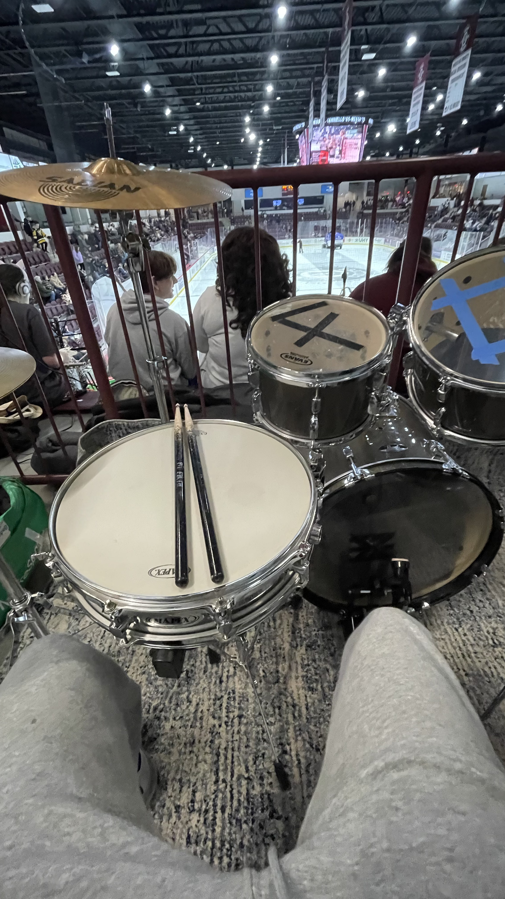
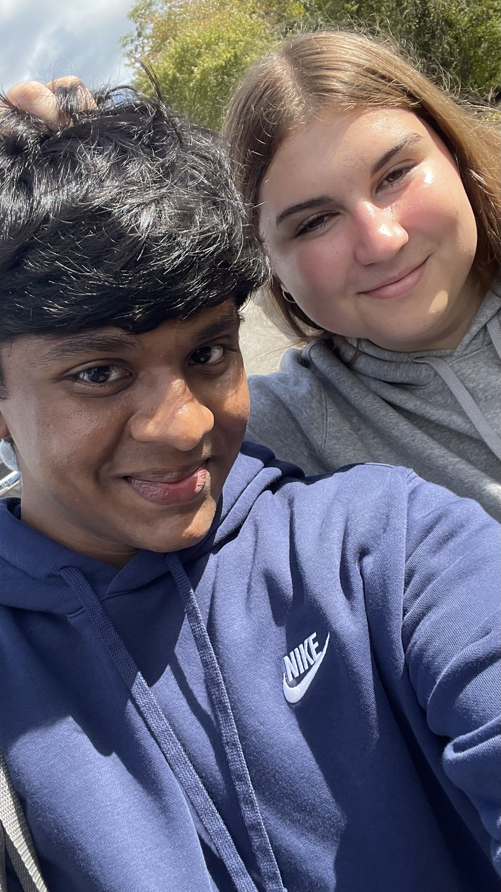

Shiloah Mittra - About Me
Bio
My name is Shiloah, and I was born in Texas. I moved to Rhode Island when I was 5 and have been here since. I am a musician of 14 years, and I play a variety of instruments, ranging from the drums, guitar, and piano. I am self-taught and use my skills to lead worship in church settings. Over the years, I have had many different career interests. Ranging from engineering, the medical field, music, and technology. As I approached the end of my junior year of high school, I knew it was time for me to lock in my career, hoping I wouldn’t make the wrong decision. From initially being set on a Certified Registered Nurse Anesthetist role (CRNA), I obtained a role as a technical consultant, which gradually shifted my view. After experiencing a technological standpoint, I knew it was a better fit for me. Exploring various Cybersecurity programs, NEIT stood out the most for its hands-on approach and technical foundations. NEIT was also very welcoming, unlike other schools I attended, where the class foundations were law rather than technology, and they were very strict. I was also very fond of the term system being accelerated, allowing me to obtain my degree and graduate earlier than traditional schools. I plan to continue schooling until I have a master's degree. I am not sure the exact role within cybersecurity that I would like to work in, but I have time to figure it out. The field is very broad and offers various pathways. As of now, I am interested in cloud security, but that may change.

Schooling
- Jarrell Elementary, Jarrell, Texas [Pre-K-K]
- Scott Elementary, Warwick, RI [K-2nd]
- Hope Elementary, Hope, RI [3rd-5th]
-----------------------------------------------------------------------------------------------------------------------------------------
- High School Diploma - 06/2025 Scituate High School - North Scituate, RI
-----------------------------------------------------------------------------------------------------------------------------------------
- (AS) Cybersecurity & Network Engineering - Expected in 03/2027
- (BS) Cybersecurity & Network Engineering - Expected in 09/2028
- (MS) Cyber Defense - Expected in 03/2030 New England Institute of Technology - East Greenwhich, RI
Hobbies
- Playing musical instruments
- I have a German Shepherd who loves to play
- Going out with my girlfriend
- Serving on the worship team at church
- Working at Best Buy's Techincal Repair Center
